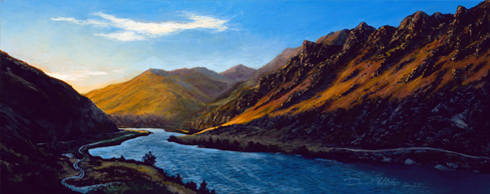
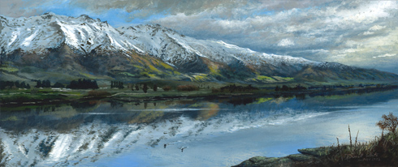
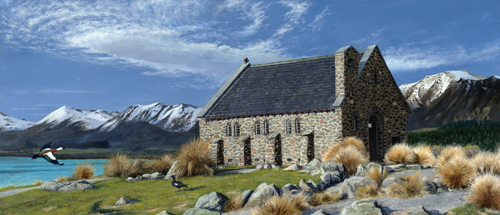
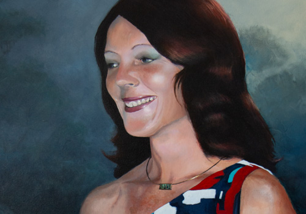
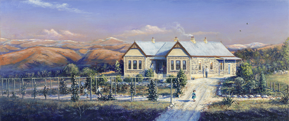
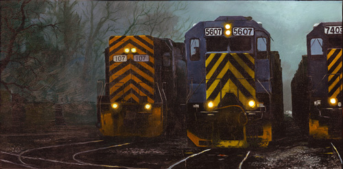
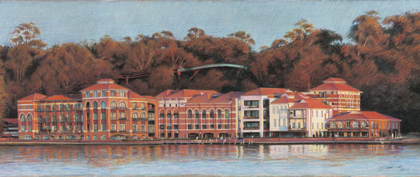

The rising sun flows into the Cromwell Gorge, Central Otago, illuminating the rugged hillsides. Lake Dunstan trail can be seen on the right winding its way to Clyde.

A very small piece for an exhibition at Mitchell Studios. A view of Lake Dunstan.

A female Paradise Shelduck flies in to be with her partner on the lawns next to the famous church located on the shores of Lake Tekapo, New Zealand.
As the sun rises, Mt Taranaki catches the light with Mt Ngauruhoe and Ruapehu silhouetted in the distance. Down in the plains, the farmers' lights signal the start to the day.
Exhibited in the 2017 NZ Art Show, Wellington, New Zealand.

In memory of my wonderful mother.

This one is for my Mum. Carrick Station used to be owned by her uncle and she has fond memories of visiting the station when she was very young. She has been asking me for ages to draw Carrick Station, but I've gone one better.
When I was talking to her about it, she remembered flowers out the front, so I've painted her standing in the driveway after picking a couple of nice roses for herself. Cousins can be seen running towards her, and other family members are in the background.

Inspired by a scene in the movie "Unstoppable".

Tall Poppy art gallery in Safety Bay, Western Australia put a call out to artists to donate work to fundraise for SIDS and Kids Australia. This was the first piece to sell that night for $1,200, with the buyer trying to purchase it several hours beforehand. They were asked to come back and purchase it at the official opening.